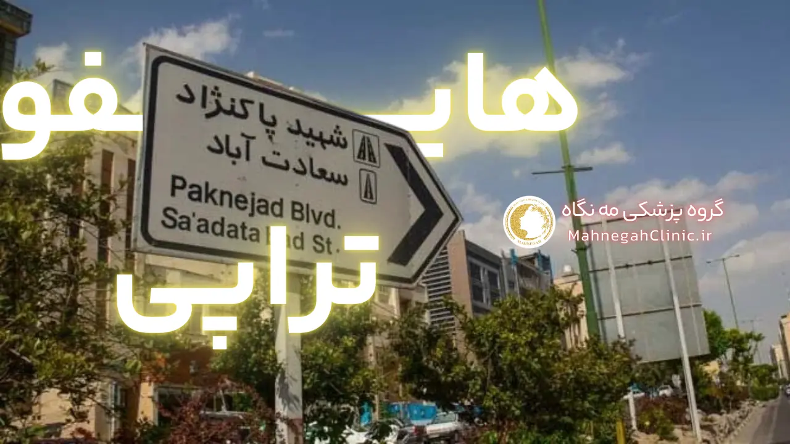
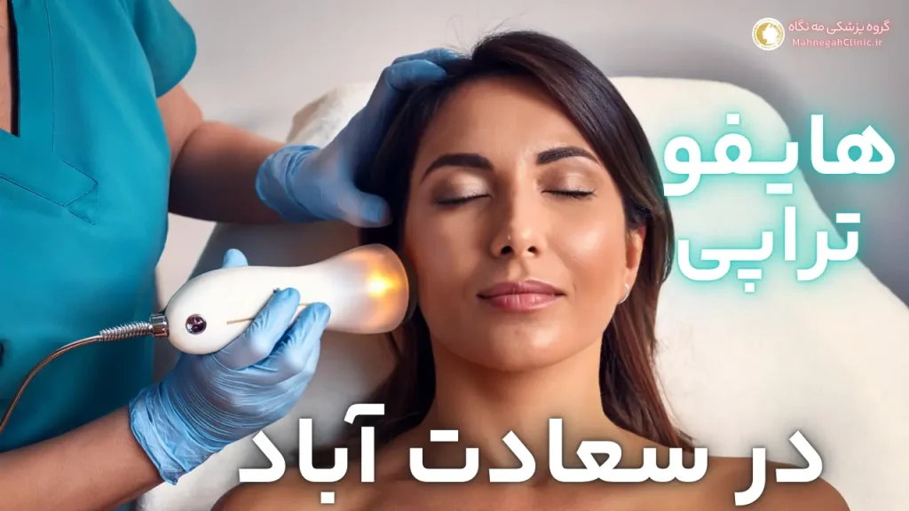
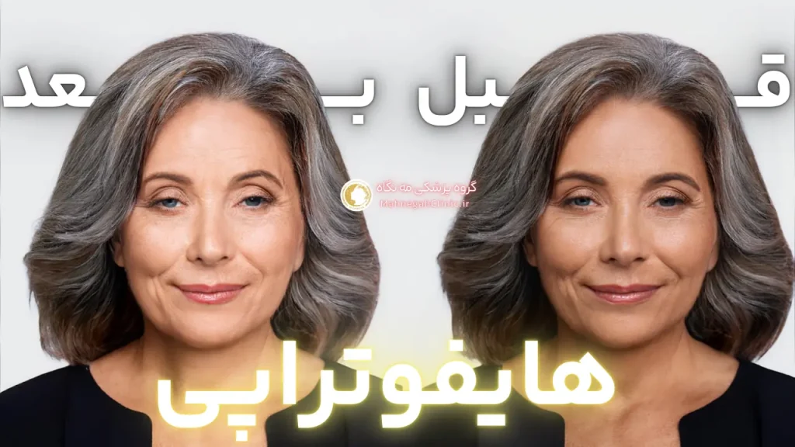
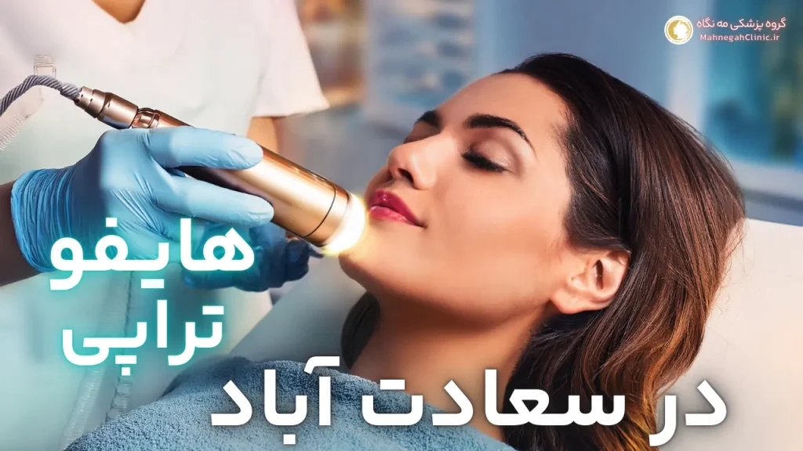
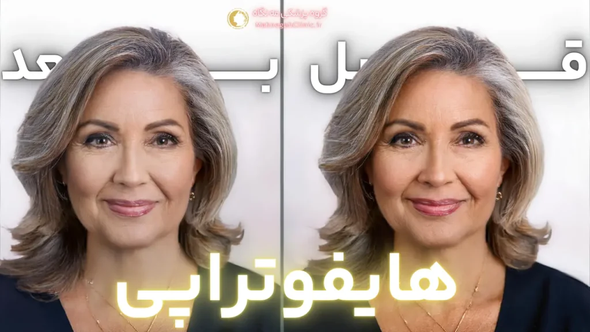
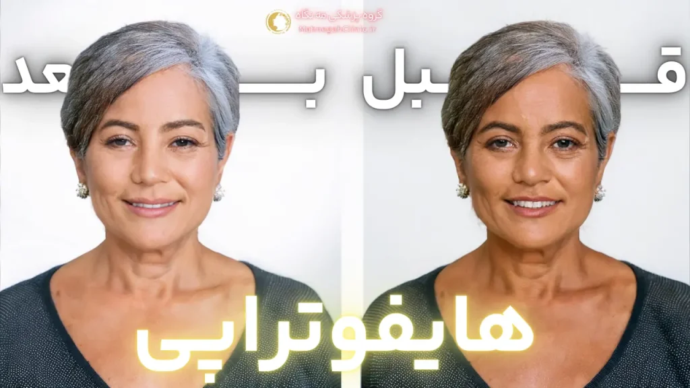
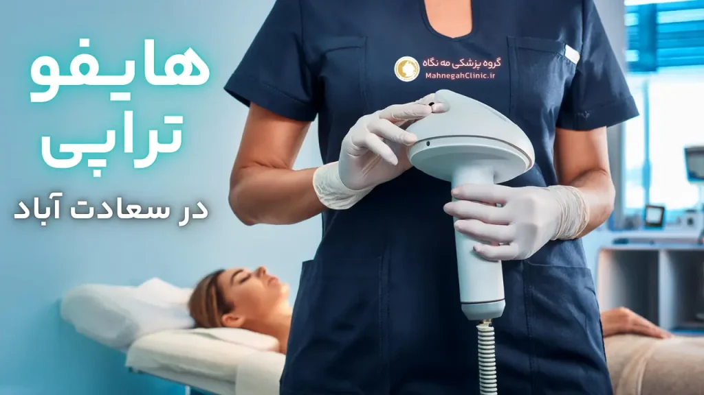

خانه / مجله / جوانسازی پوست
هایفوتراپی صورت در سعادت آباد: لیفتینگ و جوانسازی بدون جراحی

هایفوتراپی صورت چیست؟
در دنیای پر زرق و برق زیبایی، هایفوتراپی صورت به عنوان یک روش غیرتهاجمی و موثر برای جوانسازی و لیفت پوست شناخته میشود. اما هایفوتراپی صورت در سعادت آباد چیست و چگونه عمل میکند؟ در این بخش، به بررسی دقیق این روش میپردازیم و مزایای آن را برای شما شرح میدهیم.
مکانیسم عملکرد هایفوتراپی صورت
هایفوتراپی از امواج اولتراسوند متمرکز با شدت بالا (HIFU) برای نفوذ به لایههای عمیق پوست استفاده میکند. این امواج باعث ایجاد گرما در نقاط خاصی از پوست میشوند که به آن نقاط کواگولاسیون حرارتی میگویند.
این گرما باعث تحریک تولید کلاژن جدید در پوست میشود. کلاژن پروتئینی است که به پوست استحکام و قابلیت ارتجاعی میبخشد. با افزایش تولید کلاژن، پوست سفتتر، صافتر و جوانتر به نظر میرسد.
مزایای هایفوتراپی صورت در سعادت آباد
- غیرتهاجمی بودن: هایفوتراپی یک روش غیرجراحی است، به این معنی که نیازی به برش یا بخیه ندارد. این امر باعث میشود که دوره نقاهت بسیار کوتاه باشد و بتوانید به سرعت به فعالیتهای روزمره خود بازگردید.
- اثربخشی بالا: هایفوتراپی نتایج قابل توجهی در لیفت و سفت کردن پوست ارائه میدهد. این روش میتواند به کاهش چین و چروک، خطوط ریز، افتادگی پوست و شلی پوست کمک کند.
- ایمنی: هایفوتراپی یک روش ایمن است که عوارض جانبی کمی دارد. برخی از افراد ممکن است کمی قرمزی یا تورم را تجربه کنند، اما این عوارض معمولاً خفیف هستند و به سرعت برطرف میشوند.
- ماندگاری نتایج: نتایج هایفوتراپی میتوانند تا چندین ماه یا حتی یک سال باقی بمانند. البته، برای حفظ نتایج، ممکن است نیاز به جلسات درمانی تکمیلی داشته باشید.
هایفوتراپی صورت یک گزینه عالی برای افرادی است که به دنبال یک روش غیرجراحی برای جوانسازی و لیفت پوست هستند. این روش میتواند به شما کمک کند تا ظاهری جوانتر و شادابتر داشته باشید، بدون اینکه نیازی به جراحی یا دوره نقاهت طولانی داشته باشید. اگر به دنبال یک کلینیک معتبر برای انجام هایفوتراپی در سعادت آباد هستید، میتوانید با گروه پزشکی مه نگاه ما تماس بگیرید و از مشاوره رایگان بهرهمند شوید.
آیا هایفوتراپی صورت درد دارد؟
یکی از سوالات رایج در مورد هایفوتراپی صورت این است که "آیا هایفوتراپی صورت درد دارد؟". این سوال به ویژه برای افرادی که آستانه درد پایینی دارند یا نگران تجربه دردناک هستند، اهمیت دارد. در این بخش، به این سوال پاسخ میدهیم و راهکارهایی برای کاهش درد احتمالی در طول هایفوتراپی ارائه میدهیم.
آستانه درد و هایفوتراپی
درک درد یک تجربه شخصی است و آستانه درد افراد متفاوت است. برخی افراد ممکن است در طول هایفوتراپی احساس گرما، سوزش یا گزگز کنند، در حالی که دیگران ممکن است هیچ دردی را تجربه نکنند. به طور کلی، درد هایفوتراپی خفیف تا متوسط توصیف میشود و اکثر افراد آن را قابل تحمل میدانند. با این حال، اگر نگران درد هستید، میتوانید با پزشک خود در مورد گزینههای کاهش درد صحبت کنید.
روشهای کاهش درد در هایفوتراپی
- استفاده از کرم بیحسی موضعی: قبل از شروع هایفوتراپی، پزشک ممکن است یک کرم بیحسی موضعی را روی پوست شما اعمال کند. این کرم به کاهش حساسیت پوست کمک میکند و درد را به حداقل میرساند.
- مصرف مسکن: اگر آستانه درد پایینی دارید یا نگران درد هستید، میتوانید قبل از هایفوتراپی یک مسکن بدون نسخه مانند استامینوفن یا ایبوپروفن مصرف کنید. با این حال، قبل از مصرف هر گونه دارو، حتماً با پزشک خود مشورت کنید.
- تنفس عمیق و آرامش: در طول هایفوتراپی، سعی کنید نفسهای عمیق و آرام بکشید و روی آرامش خود تمرکز کنید. این کار به کاهش استرس و تنش عضلانی کمک میکند و درد را کاهش میدهد.
- ارتباط با پزشک: اگر در طول هایفوتراپی احساس درد کردید، حتماً به دکتر هایفوتراپی خود اطلاع دهید. پزشک میتواند تنظیمات دستگاه را تغییر دهد یا از روشهای دیگری برای کاهش درد استفاده کند.
هایفوتراپی صورت یک روش ایمن و موثر برای جوانسازی پوست است که معمولاً با درد کمی همراه است. با این حال، اگر نگران درد هستید، میتوانید با پزشک خود در مورد گزینههای کاهش درد صحبت کنید و از یک تجربه راحت و بدون درد لذت ببرید. در گروه پزشکی مه نگاه ما در سعادت آباد، ما از آخرین تکنولوژیها و روشها برای به حداقل رساندن درد و ناراحتی در طول هایفوتراپی استفاده میکنیم.

قیمت هایفوتراپی صورت در سعادت آباد
یکی از مهمترین مسائلی که قبل از انجام هرگونه عمل زیبایی ذهن افراد را به خود مشغول میکند، قیمت آن است. هایفوتراپی صورت در سعادت آباد نیز از این قاعده مستثنی نیست. اما عوامل موثر بر قیمت هایفوتراپی چیست و چگونه میتوان بهترین قیمت را پیدا کرد؟ در این بخش به این سوالات پاسخ میدهیم.
در این پست 👈 با بهترین مرکز هایفو صورت آشنا شوید
عوامل موثر بر قیمت هایفوتراپی صورت در سعادت آباد
- ناحیه تحت درمان: قیمت هایفوتراپی به ناحیه تحت درمان بستگی دارد. به عنوان مثال، هایفوتراپی کل صورت معمولاً گرانتر از هایفوتراپی یک ناحیه خاص مانند پیشانی یا اطراف چشم است.
- تعداد جلسات درمانی: تعداد جلسات درمانی مورد نیاز نیز بر قیمت هایفوتراپی تاثیر میگذارد. برخی افراد ممکن است تنها به یک جلسه درمانی نیاز داشته باشند، در حالی که دیگران ممکن است به چندین جلسه برای دستیابی به نتایج مطلوب نیاز داشته باشند.
- تجربه و تخصص پزشک: تجربه و تخصص پزشک نیز میتواند بر قیمت هایفوتراپی تاثیر بگذارد. پزشکان با تجربه و متخصص ممکن است هزینه بیشتری را برای خدمات خود دریافت کنند.
- نوع دستگاه هایفوتراپی: نوع دستگاه هایفوتراپی مورد استفاده نیز میتواند بر قیمت تاثیر بگذارد. برخی از دستگاهها پیشرفتهتر و گرانتر هستند و ممکن است نتایج بهتری را ارائه دهند.
- موقعیت جغرافیایی کلینیک: موقعیت جغرافیایی کلینیک نیز میتواند بر قیمت هایفوتراپی تاثیر بگذارد. کلینیکهای واقع در مناطق مرفه ممکن است هزینه بیشتری را برای خدمات خود دریافت کنند.
مقایسه قیمت هایفوتراپی در سعادت آباد با سایر مناطق
قیمت هایفوتراپی صورت در سعادت آباد ممکن است کمی بالاتر از سایر مناطق تهران باشد. این به دلیل موقعیت جغرافیایی سعادت آباد و وجود کلینیکهای تخصصی و مجهز در این منطقه است. با این حال، با کمی تحقیق و مقایسه قیمتها، میتوانید کلینیکی را پیدا کنید که خدمات با کیفیت را با قیمت مناسب ارائه میدهد.
راهنمای کاااااااااااااااااامل قیمت هایفو 👈 هزینه هایفوتراپی صورت در سعادت آباد
نکته مهم: در انتخاب کلینیک برای انجام هایفوتراپی صورت، قیمت نباید تنها عامل تعیینکننده باشد. مهم است که کلینیکی را انتخاب کنید که از دستگاههای با کیفیت استفاده میکند و پزشکان متخصص و با تجربهای دارد. همچنین، مطمئن شوید که کلینیک مجوزهای لازم را دارد و از استانداردهای بهداشتی پیروی میکند.
اگر به دنبال یک کلینیک معتبر برای انجام هایفوتراپی صورت در سعادت آباد هستید، میتوانید با گروه پزشکی مه نگاه ما تماس بگیرید. ما با استفاده از بهترین دستگاهها و توسط پزشکان متخصص، خدمات با کیفیت را با قیمت مناسب ارائه میدهیم.

نظرات مردم در مورد هایفوتراپی صورت در سعادت آباد
تجربه شخصی افراد بعد از انجام هایفوتراپی، یکی از بهترین راهها برای سنجش اثربخشی و رضایتمندی از این روش است. در این بخش، به بررسی نظرات مردم در مورد هایفوتراپی صورت میپردازیم و هم جنبههای مثبت و هم چالشهای احتمالی را بررسی میکنیم.
بررسی تجربیات مثبت افراد پس از هایفوتراپی صورت در سعادت آباد
بسیاری از افرادی که هایفوتراپی صورت را تجربه کردهاند، از نتایج آن بسیار راضی هستند. آنها گزارش میدهند که پوستشان سفتتر، صافتر و جوانتر شده است و چین و چروکها و خطوط ریز کاهش یافتهاند.
همچنین، بسیاری از افراد از این موضوع که هایفوتراپی یک روش غیرتهاجمی است و نیازی به دوره نقاهت طولانی ندارد، ابراز رضایت میکنند. آنها میتوانند بلافاصله پس از درمان به فعالیتهای روزمره خود بازگردند.
برخی از نظرات مثبتی که در مورد هایفوتراپی صورت میشنویم عبارتند از:
- "بعد از هایفوتراپی، پوستم سفتتر و لیفت شده به نظر میرسد. خیلی خوشحالم که این روش را انتخاب کردم!"
- "چین و چروکهای اطراف چشمم کاهش یافته و پوستم جوانتر شده است. هایفوتراپی واقعا معجزه کرد!"
- "از اینکه هایفوتراپی یک روش غیرجراحی است و نیازی به استراحت طولانی ندارد، خیلی راضی هستم. میتوانم بلافاصله به کار و زندگیام برگردم."
چالشها و نگرانیهای احتمالی
در کنار نظرات مثبت، برخی افراد ممکن است چالشها یا نگرانیهایی در مورد هایفوتراپی داشته باشند. برخی از این نگرانیها عبارتند از:
- درد: همانطور که قبلاً بحث شد، برخی افراد ممکن است در طول هایفوتراپی احساس درد یا ناراحتی کنند. با این حال، این درد معمولاً خفیف است و با روشهای کاهش درد قابل کنترل است.
- تورم و قرمزی: برخی افراد ممکن است پس از هایفوتراپی دچار تورم و قرمزی شوند. این عوارض معمولاً خفیف هستند و ظرف چند روز برطرف میشوند.
- نتایج: نتایج هایفوتراپی ممکن است بلافاصله پس از درمان قابل مشاهده نباشند و ممکن است چند هفته یا چند ماه طول بکشد تا نتایج کامل ظاهر شوند. همچنین، ماندگاری نتایج ممکن است برای همه افراد یکسان نباشد و ممکن است به عوامل مختلفی مانند سن، نوع پوست و سبک زندگی بستگی داشته باشد.
نکته مهم: قبل از انجام هایفوتراپی، مهم است که با پزشک خود در مورد انتظارات خود و نتایج واقعی که میتوانید انتظار داشته باشید، صحبت کنید. همچنین، در مورد هرگونه نگرانی یا سوالی که دارید، با پزشک خود مشورت کنید.
در گروه پزشکی مه نگاه سعادت آباد، ما به نظرات و نگرانیهای شما اهمیت میدهیم و تمام تلاش خود را میکنیم تا بهترین تجربه ممکن را برای شما فراهم کنیم. ما با استفاده از دستگاههای پیشرفته و توسط پزشکان متخصص، خدمات با کیفیت و ایمن را ارائه میدهیم. همچنین، ما در طول درمان و پس از آن، شما را همراهی میکنیم و به سوالات شما پاسخ میدهیم.

عوارض هایفوتراپی صورت در سعادت آباد
هرچند هایفوتراپی صورت یک روش ایمن و غیرتهاجمی محسوب میشود، اما مانند هر روش دیگری، ممکن است با عوارض جانبی همراه باشد. در این بخش، به بررسی عوارض شایع و نادر هایفوتراپی میپردازیم و اطلاعات لازم را برای تصمیمگیری آگاهانه در اختیار شما قرار میدهیم.
عوارض جانبی شایع
- قرمزی و تورم: پس از هایفوتراپی، ممکن است در ناحیه تحت درمان قرمزی و تورم خفیفی مشاهده شود. این عوارض معمولاً ظرف چند ساعت یا چند روز برطرف میشوند و نیازی به نگرانی نیست.
- درد و حساسیت: برخی افراد ممکن است پس از درمان احساس درد یا حساسیت در ناحیه تحت درمان داشته باشند. این درد معمولاً خفیف است و با مصرف مسکنهای بدون نسخه قابل کنترل است.
- کبودی: در برخی موارد، ممکن است در ناحیه تحت درمان کبودیهای خفیفی ایجاد شود. این کبودیها معمولاً ظرف چند روز بهبود مییابند.
- گزگز و بیحسی: برخی افراد ممکن است پس از هایفوتراپی احساس گزگز یا بیحسی در ناحیه تحت درمان داشته باشند. این عوارض معمولاً موقتی هستند و ظرف چند روز برطرف میشوند.
عوارض نادر و جدی - هایفوتراپی صورت در سعادت آباد
- سوختگی: در موارد نادر، ممکن است در اثر هایفوتراپی سوختگیهای سطحی ایجاد شود. این عوارض معمولاً در اثر استفاده نادرست از دستگاه یا عدم تجربه کافی پزشک رخ میدهند. برای جلوگیری از این عوارض، مهم است که هایفوتراپی را توسط پزشک متخصص و با تجربه انجام دهید.
- آسیب به اعصاب: در موارد بسیار نادر، ممکن است هایفوتراپی باعث آسیب به اعصاب صورت شود. این عوارض میتواند منجر به بیحسی یا ضعف عضلانی در صورت شود. برای کاهش خطر این عوارض، مهم است که هایفوتراپی را توسط پزشک متخصص و با تجربه انجام دهید و از دستگاههای با کیفیت استفاده کنید.
نکته مهم: اگر پس از هایفوتراپی هرگونه عارضه جانبی غیرمعمول یا نگرانکنندهای را تجربه کردید، حتماً با پزشک خود تماس بگیرید.
در گروه پزشکی مه نگاه ما در سعادت آباد، ما از دستگاههای با کیفیت و ایمن استفاده میکنیم و هایفوتراپی را توسط پزشکان متخصص و با تجربه انجام میدهیم. همچنین، ما قبل از درمان، شما را در مورد عوارض احتمالی هایفوتراپی آگاه میکنیم و تمام تلاش خود را میکنیم تا خطر این عوارض را به حداقل برسانیم.

آیا هایفوتراپی صورت را لاغر میکند؟
یکی از باورهای رایج در مورد هایفوتراپی این است که میتواند به لاغری صورت کمک کند. اما آیا این باور صحت دارد؟ در این بخش، به بررسی تاثیر هایفوتراپی بر چربی صورت میپردازیم و روشهای دیگر لاغری صورت را نیز معرفی میکنیم.
تاثیر هایفوتراپی بر چربی صورت
هایفوتراپی در درجه اول برای لیفت و سفت کردن پوست طراحی شده است و تاثیر مستقیمی بر چربی صورت ندارد. با این حال، برخی افراد ممکن است پس از هایفوتراپی متوجه شوند که صورتشان کمی لاغرتر به نظر میرسد. این ممکن است به دلیل سفت شدن پوست و کاهش افتادگی باشد که باعث میشود صورت متناسبتر و لاغرتر به نظر برسد.
با این حال، اگر هدف اصلی شما لاغری صورت است، هایفوتراپی به تنهایی ممکن است کافی نباشد. در این صورت، ممکن است نیاز به ترکیب هایفوتراپی با سایر روشهای لاغری صورت داشته باشید.
روشهای دیگر لاغری صورت
- رژیم غذایی و ورزش: کاهش وزن کلی بدن میتواند به کاهش چربی صورت نیز کمک کند. یک رژیم غذایی سالم و متعادل همراه با ورزش منظم میتواند به شما در رسیدن به این هدف کمک کند.
- تزریق چربیسوز: در برخی موارد، پزشک ممکن است تزریق چربیسوز را برای کاهش چربی موضعی در صورت توصیه کند. این روش شامل تزریق یک ماده به زیر پوست است که باعث تجزیه سلولهای چربی میشود.
- لیپوساکشن: در موارد شدیدتر، ممکن است لیپوساکشن برای برداشتن چربی اضافی از صورت توصیه شود. این روش یک جراحی است که شامل ایجاد برشهای کوچک و استفاده از یک لوله نازک برای مکش چربی است.
نکته مهم: قبل از انتخاب هر روش لاغری صورت، مهم است که با پزشک خود مشورت کنید. پزشک میتواند شما را در مورد مزایا و معایب هر روش راهنمایی کند و به شما کمک کند تا بهترین روش را برای رسیدن به اهداف خود انتخاب کنید.
در گروه پزشکی مه نگاه ما در سعادت آباد، ما طیف وسیعی از خدمات زیبایی را ارائه میدهیم، از جمله هایفوتراپی صورت. اگر به دنبال یک روش غیرتهاجمی برای جوانسازی و لیفت پوست هستید یا میخواهید در مورد روشهای دیگر لاغری صورت اطلاعات بیشتری کسب کنید، میتوانید با ما تماس بگیرید و از مشاوره رایگان بهرهمند شوید.

بهترین دستگاه هایفوتراپی صورت
در دنیای پر رقابت تکنولوژی های زیبایی، انتخاب بهترین دستگاه هایفوتراپی صورت میتواند چالش برانگیز باشد. هر دستگاه با ویژگیها و قابلیتهای خاص خود، نتایج متفاوتی را ارائه میدهد. در این بخش، به بررسی ویژگیهای یک دستگاه خوب هایفوتراپی میپردازیم و برخی از دستگاههای محبوب را مقایسه میکنیم تا به شما در انتخاب بهترین گزینه برای نیازهایتان کمک کنیم.
ویژگیهای یک دستگاه خوب هایفوتراپی
- عمق نفوذ: یک دستگاه خوب هایفوتراپی باید قابلیت نفوذ به لایههای مختلف پوست را داشته باشد. این به شما امکان میدهد تا نواحی مختلف صورت را با دقت و اثربخشی درمان کنید.
- دقت و کنترل: دستگاه باید دارای سیستم هدفگیری دقیق باشد تا بتوانید انرژی را به طور دقیق به نواحی مورد نظر برسانید و از آسیب به بافتهای اطراف جلوگیری کنید.
- ایمنی: دستگاه باید دارای سیستمهای ایمنی پیشرفته باشد تا از سوختگی و سایر عوارض جانبی جلوگیری کند.
- راحتی بیمار: دستگاه باید دارای طراحی ارگونومیک باشد تا در طول درمان برای بیمار راحت باشد. همچنین، دستگاه باید دارای سیستم خنککننده باشد تا درد و ناراحتی را به حداقل برساند.
- نتایج بالینی: دستگاه باید دارای نتایج بالینی اثبات شده باشد که اثربخشی آن را در لیفت و سفت کردن پوست نشان دهد.
مقایسه دستگاههای محبوب - هایفوتراپی صورت در سعادت آباد
در حال حاضر، چندین دستگاه هایفوتراپی محبوب در بازار وجود دارد که هر کدام ویژگیها و مزایای خاص خود را دارند. برخی از این دستگاهها عبارتند از:
- Ulthera: این دستگاه یکی از اولین و محبوبترین دستگاههای هایفوتراپی است. Ulthera دارای عمق نفوذ بالا و دقت بسیار خوبی است و نتایج بالینی اثبات شدهای را ارائه میدهد.
- Doublo: این دستگاه نیز یکی از دستگاههای محبوب هایفوتراپی است که دارای عمق نفوذ بالا و دقت خوبی است. Doublo همچنین دارای سیستم خنککننده است که درد و ناراحتی را در طول درمان کاهش میدهد.
- HIFU-VMAX: این دستگاه یک دستگاه هایفوتراپی جدیدتر است که دارای قابلیتهای پیشرفتهای مانند تصویربرداری اولتراسوند است. این قابلیت به پزشک امکان میدهد تا لایههای پوست را به طور دقیق مشاهده کند و انرژی را به طور دقیق به نواحی مورد نظر برساند.
نکته مهم: انتخاب بهترین دستگاه هایفوتراپی به نیازها و بودجه شما بستگی دارد. قبل از انتخاب دستگاه، مهم است که با پزشک خود مشورت کنید و در مورد مزایا و معایب هر دستگاه اطلاعات کسب کنید.
در گروه پزشکی مه نگاه ما در سعادت آباد، ما از بهترین و پیشرفتهترین دستگاههای هایفوتراپی استفاده میکنیم. ما با توجه به نیازها و شرایط پوست شما، بهترین دستگاه را برای شما انتخاب میکنیم و درمان را با دقت و ایمنی بالا انجام میدهیم.

مراقبتهای بعد از هایفوتراپی صورت در سعادت آباد
پس از انجام هایفوتراپی صورت، رعایت مراقبتهای مناسب برای بهبود سریعتر و دستیابی به نتایج مطلوب بسیار اهمیت دارد. در این بخش، نکات مهمی را برای مراقبتهای بعد از هایفوتراپی بیان میکنیم تا بتوانید از این روش درمانی نهایت بهره را ببرید و از عوارض احتمالی جلوگیری کنید.
نکات مهم برای بهبود سریعتر
- استفاده از کمپرس سرد: در چند ساعت اول پس از هایفوتراپی، میتوانید از کمپرس سرد برای کاهش تورم و قرمزی استفاده کنید. کمپرس سرد را به مدت 10-15 دقیقه روی ناحیه تحت درمان قرار دهید و این کار را چند بار در روز تکرار کنید.
- آبرسانی پوست: پس از هایفوتراپی، پوست شما ممکن است کمی خشک شود. برای حفظ رطوبت پوست، از مرطوبکنندههای ملایم و بدون عطر استفاده کنید. همچنین، میتوانید از ماسکهای آبرسان استفاده کنید.
- محافظت از پوست در برابر آفتاب: پس از هایفوتراپی، پوست شما نسبت به آفتاب حساستر میشود. حتماً از کرم ضد آفتاب با SPF بالا استفاده کنید و از قرار گرفتن مستقیم در معرض نور خورشید خودداری کنید.
- پرهیز از فعالیتهای سنگین: در چند روز اول پس از هایفوتراپی، از انجام فعالیتهای سنگین که باعث تعریق میشوند، خودداری کنید. تعریق میتواند باعث تحریک پوست و افزایش تورم شود.
- رعایت بهداشت پوست: پس از هایفوتراپی، پوست خود را به آرامی و با استفاده از شویندههای ملایم تمیز کنید. از اسکراب یا لایهبردارهای قوی استفاده نکنید، زیرا ممکن است باعث تحریک پوست شوند.
جلوگیری از عوارض احتمالی
- عدم استفاده از محصولات آرایشی سنگین: در چند روز اول پس از هایفوتراپی، از استفاده از محصولات آرایشی سنگین خودداری کنید. این محصولات میتوانند منافذ پوست را مسدود کنند و باعث تحریک پوست شوند.
- عدم دستکاری پوست: از خاراندن، مالیدن یا دستکاری ناحیه تحت درمان خودداری کنید. این کار میتواند باعث تحریک پوست و افزایش خطر عفونت شود.
- مراجعه به پزشک در صورت بروز عوارض: اگر پس از هایفوتراپی هرگونه عارضه جانبی غیرمعمول یا نگرانکنندهای را تجربه کردید، حتماً با پزشک خود تماس بگیرید.
در گروه پزشکی مه نگاه ما در سعادت آباد، ما پس از انجام هایفوتراپی صورت، دستورالعملهای مراقبتی کاملی را در اختیار شما قرار میدهیم و در صورت نیاز، شما را برای پیگیری و معاینه مجدد دعوت میکنیم. ما به سلامت و رضایت شما اهمیت میدهیم و تمام تلاش خود را میکنیم تا بهترین نتایج را برای شما به ارمغان بیاوریم.
اگر به دنبال یک کلینیک معتبر برای انجام هایفوتراپی صورت در سعادت آباد هستید یا سوالی در مورد مراقبتهای بعد از هایفوتراپی دارید، میتوانید با ما تماس بگیرید و از مشاوره رایگان بهرهمند شوید.
پرسش و پاسخهای رایج درباره هایفوتراپی صورت در سعادت آباد
هایفوتراپی یک روش غیرتهاجمی برای لیفت و جوانسازی پوست است که از امواج اولتراسوند متمرکز برای تحریک تولید کلاژن استفاده میکند.
اکثر افراد درد کمی را در طول هایفوتراپی تجربه میکنند، اما این درد قابل تحمل است و با روشهای کاهش درد قابل کنترل است.
قیمت هایفوتراپی صورت در سعادت آباد به عوامل مختلفی مانند ناحیه تحت درمان، تعداد جلسات و تجربه پزشک بستگی دارد. برای اطلاع از قیمت دقیق، بهتر است با کلینیکهای تخصصی در سعادت آباد تماس بگیرید.
هایفوتراپی تاثیر مستقیمی بر چربی صورت ندارد، اما با سفت کردن پوست میتواند باعث شود صورت لاغرتر به نظر برسد.
انتخاب بهترین دستگاه به نیازها و شرایط شما بستگی دارد. برخی از دستگاههای محبوب عبارتند از Ulthera، Doublo و HIFU-VMAX.